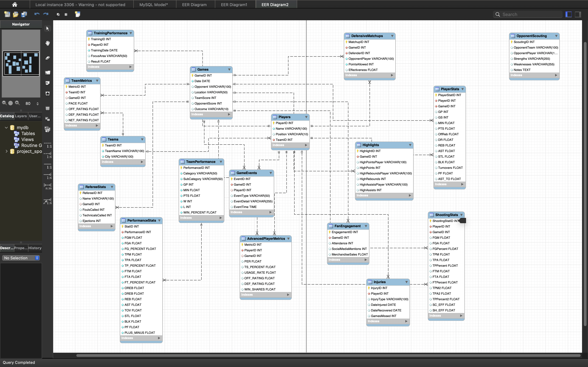
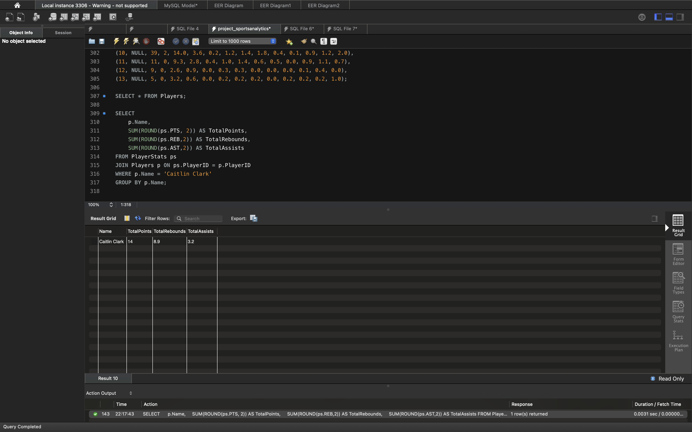
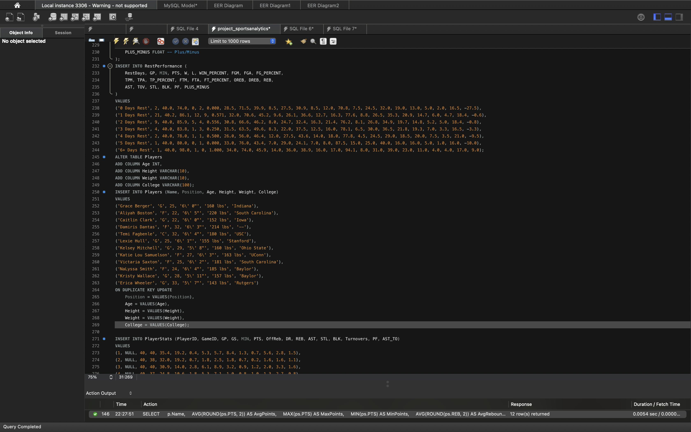
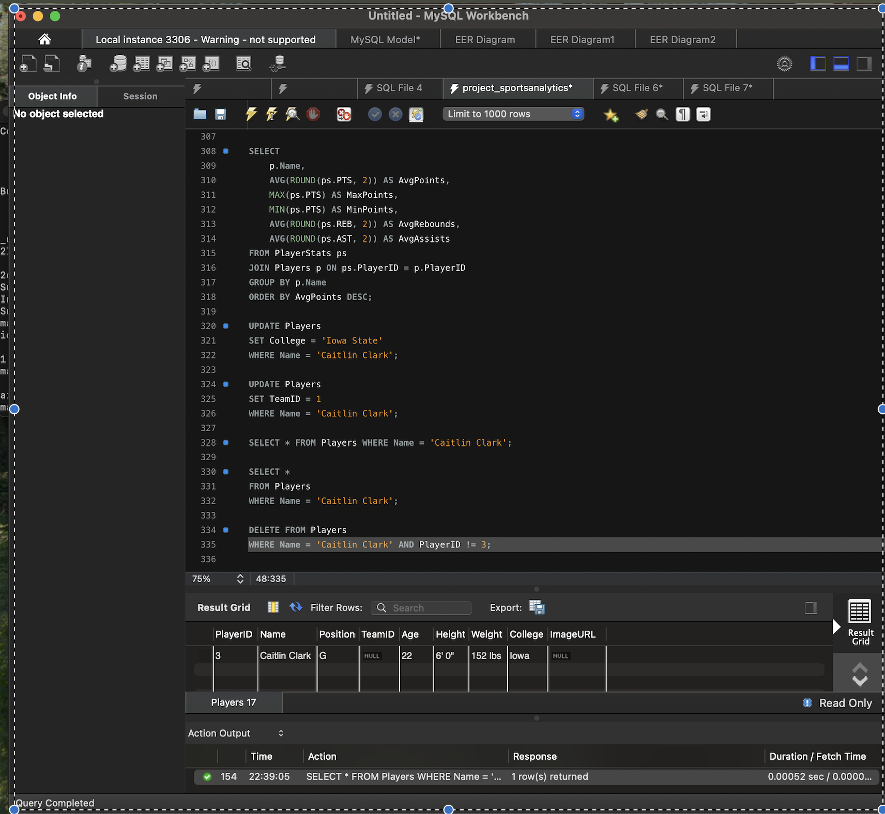
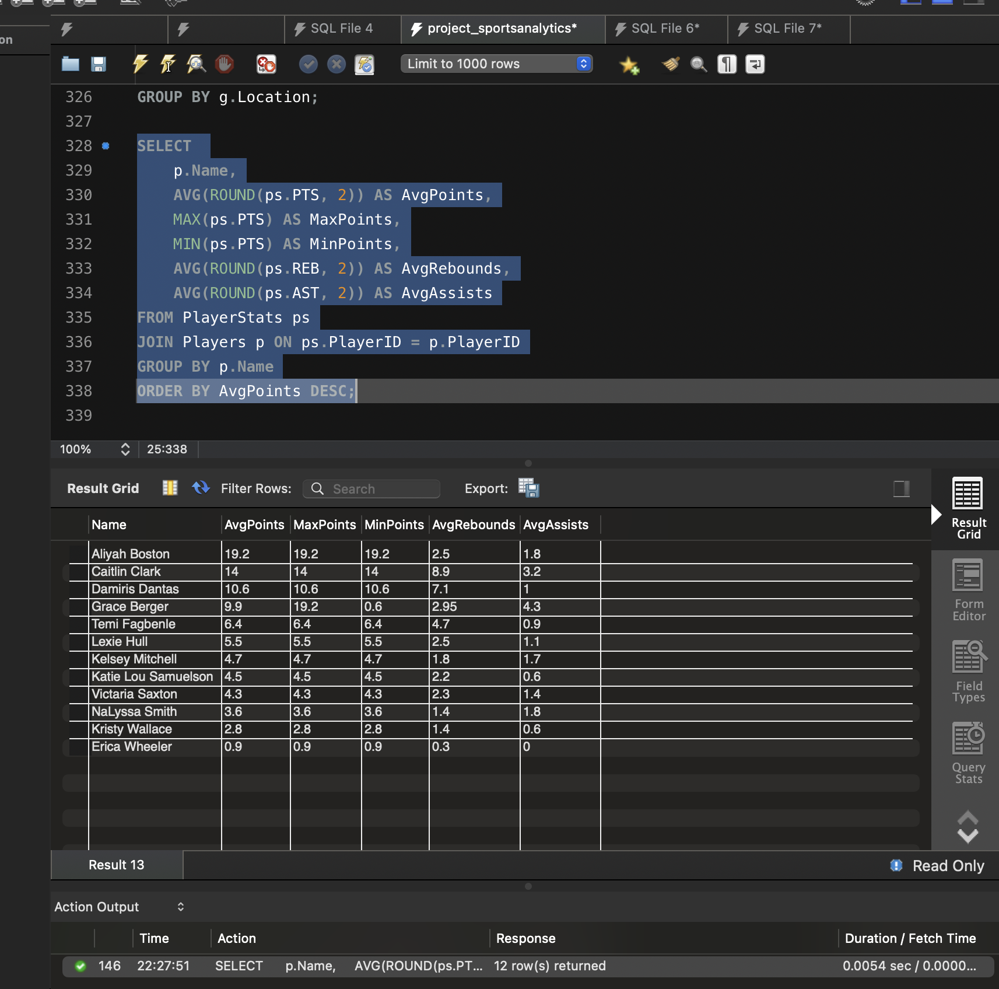

Project Overview
This project focuses on analyzing sports data, specifically the Indiana Fever WNBA team. It includes SQL scripts, an ERD, and key data visualizations to showcase insights into team and player performance.
Entity-Relationship Diagram (ERD)
The ERD represents the database design, showing relationships between tables such as Players, Games, and Stats.
SQL Scripts
Data Visualizations




Key Insights
- Home vs. Away performance comparison: The team performs better at home with a win percentage of 60%.
- Top performer: Caitlin Clark leads in average points per game.
- Impact of rest days: The team’s performance improves with more rest days.